- 抓取来源：知识星球「南半球聊财经」
- 当天发帖数：13 条（12:30 – 14:30，美西时区）
- 配图数：28 张
今日要点速览
今天 Jason 的 13 条帖子可以串成一条主线：全球资本与产业正在重新定价"人"和"算力"这两种稀缺资源。一头是人口——梁建章用韩国"发钱有效"的实证告诉你，中国若想把生育率从 1.0 拉到 1.25，每月要给到 855 元发到六岁；同一天医保局的数据显示在职退休比已从 1998 年的 4.09 掉到 2025 年的 2.60，养老金和医保的分母正在肉眼可见地变薄。另一头是 AI——花旗说 AI 的瓶颈不是需求见顶而是供给跟不上，资本开支是"递延"不是"取消"；高盛说中国大模型已跨过"商业可用"的智能临界点；五矿则把这些串成一条投资线索：中国出口的下一站是数字服务出口（云、算力、AI 服务）。
中间夹着几条财政与地缘的硬信息：摩根斯坦利指出美国赤字反而在改善（稳定在 GDP 的 5.2%），这对美债收益率是利好；高盛却提示市场已经开始给美联储加息定价（期权隐含加息概率 >50%）——赤字压力缓解 + 加息预期升温，这是两个方向相反的力，值得盯紧。加上欧盟酝酿对华"团结工具"、特朗普对伊朗放狠话，地缘风险溢价并没有消失。
一句话：人口是慢变量但已到临界，AI 是快变量但受制于电和铁，美联储是今年最大的分歧点。
帖 1 · 12:30 · #人口
帖子原文
梁建章：韩国近两三年生育率回升的主要原因就是加大了发钱的力度，国内外的证据均表明，发钱的力度要足够大，才能显著提高生育率。中国已经进入物质全面充裕唯缺孩子的时期，现在投资孩子是最好的基建。大幅增加育儿补贴，短期有利于减轻家庭养育孩子的经济负担，提振消费，促进就业，形成经济增长的预期；长期看，出生人口的增加能够提升中国的创新力和综合国力。当然，要构建生育友好型社会，仅仅发钱补贴生育还不够，还需要大力发展普惠托育服务、减轻家庭的教育负担等。
#人口#
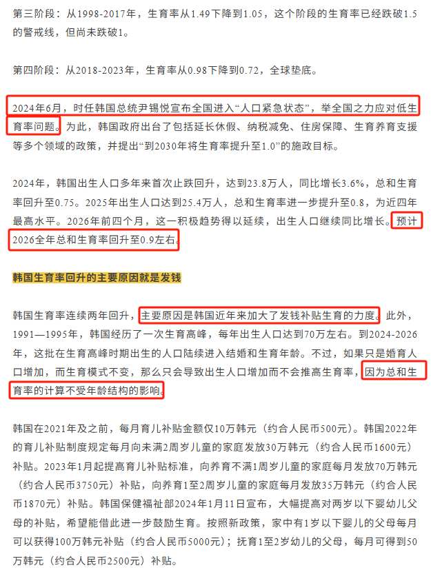
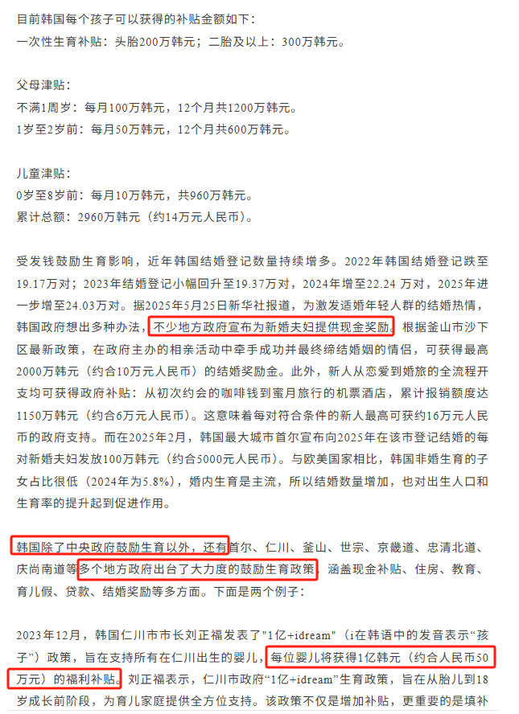
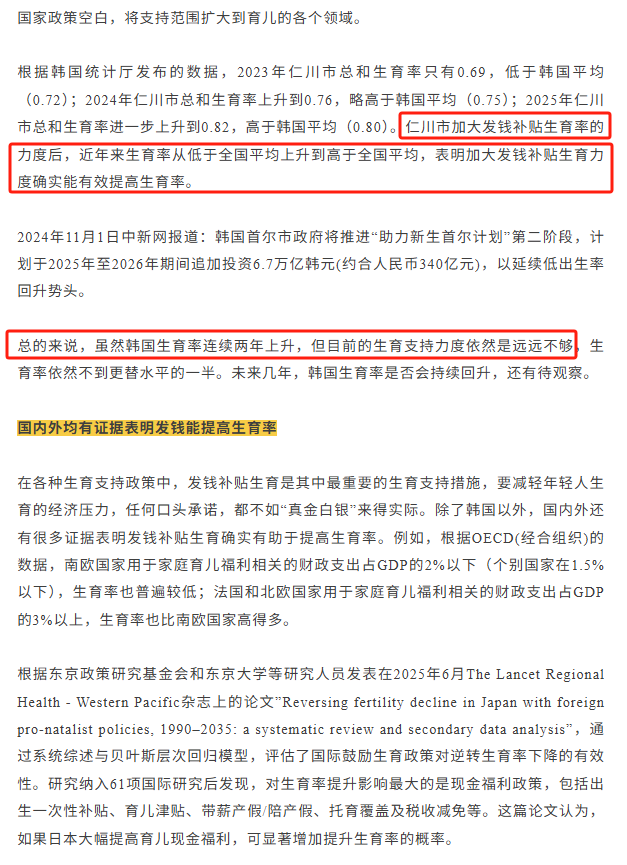
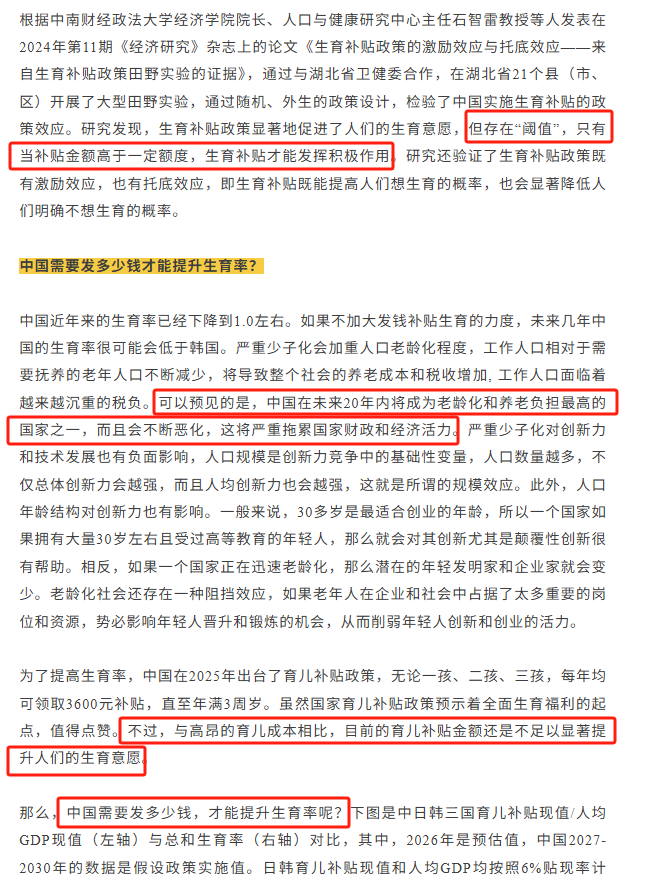
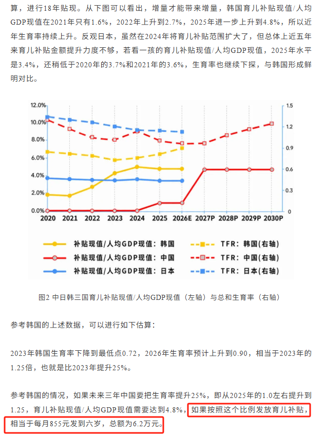
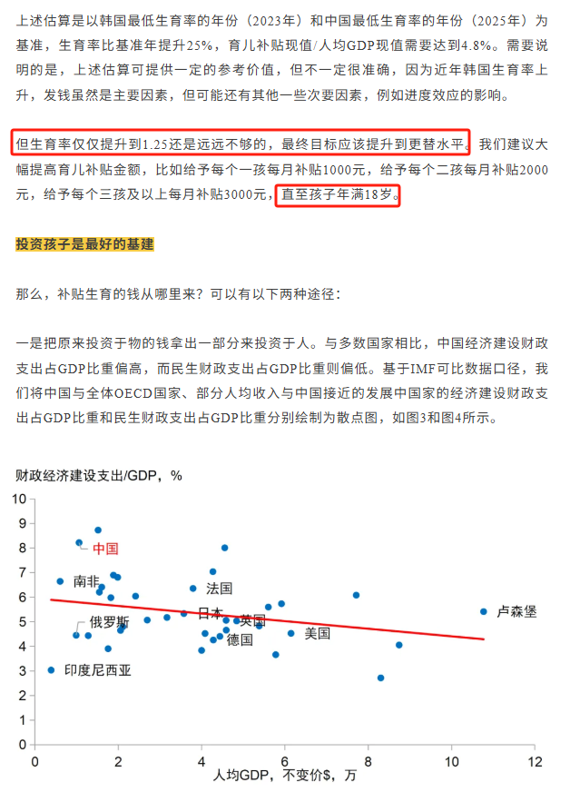
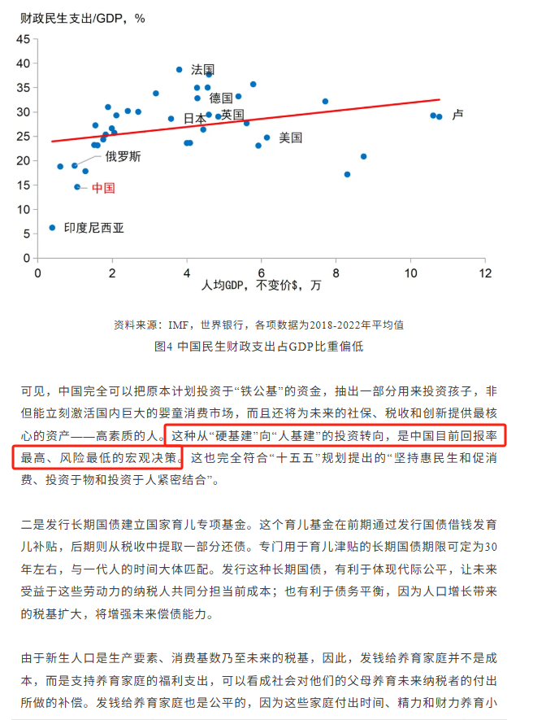
一句话核心
韩国用真金白银把生育率从 0.72 拉回 0.9，证明"发钱有效"；中国要复制，每月要发到 855 元、发到孩子六岁，而梁建章认为这还远远不够。
背景与关键数据
先解释两个概念：
- 总和生育率（TFR, Total Fertility Rate）：假设一位女性按当前各年龄段的平均生育水平走完一生，她一共会生几个孩子。2.1 是"更替水平"——刚好够维持人口不减少（2 个孩子替换父母，多出的 0.1 补偿夭折）。低于 1.5 通常被视为"低生育率陷阱"警戒线。
- 补贴现值 / 人均 GDP 现值：把未来 18 年要发的补贴按 6% 折现率折成"今天的一笔钱"，再除以同样折现的人均 GDP。这是一个衡量"补贴够不够慷慨"的标准化尺子，可以跨国比较。
韩国的轨迹：1998–2017 年 TFR 从 1.49 跌到 1.05；2018–2023 年从 0.98 跌到 0.72（全球垫底）。2024 年 6 月尹锡悦宣布全国进入"人口紧急状态"。随后大规模发钱——一次性生育补贴头胎 200 万韩元、父母津贴不满 1 岁每月 100 万韩元、儿童津贴发到 8 岁，累计约 2960 万韩元（≈14 万人民币）。结果：2024 年出生人口 23.8 万（+3.6%），TFR 回到 0.75；2025 年 25.4 万，TFR 0.8；2026 年预计 0.9。
图片解读
- 图 1–3（文字）：讲韩国四阶段生育率下滑史 + 2024 年后的政策反转。关键实证是仁川市：加大发钱力度前 TFR 只有 0.69（低于全国 0.72），加大后 2025 年升到 0.82（高于全国 0.80）——同一国家内部的"准自然实验"，很有说服力。
- 图 4（文字）：引用中南财大石智雷的湖北 21 县田野实验，发现生育补贴存在**"阈值效应"**——补贴金额低于某个额度时基本没用，超过阈值才起作用。这是全文最关键的机制。中国 2025 年的政策是每年 3600 元发到 3 周岁（合每月 300 元）。
- 图 5（折线图，全帖核心）：左轴是"补贴现值/人均 GDP 现值"（%），右轴是 TFR。
- 韩国（黄）：补贴比例从 2021 年的 1.6% → 2022 年 2.7% → 2025 年 4.8%；对应黄色虚线 TFR 从谷底 0.72 抬到 0.9。
- 日本（蓝）：补贴比例常年横在 3.4% 左右（2025 年 3.4%，甚至低于 2020 年的 3.7%），蓝色虚线 TFR 一路阴跌到 1.1 附近。
- 中国（红）：2020–2024 年几乎是 0（贴地），2025 年才微微抬头到 0.9% 左右；2027 年起的红色实线跳到 4.8% 是假设值（"如果中国照韩国比例发钱"），对应红色虚线 TFR 从 1.0 回升到 1.25。
- 读图要点：这张图的逻辑是"增量才能带来增量"——不是补贴的绝对水平，而是补贴比例的上升幅度跟 TFR 回升同步。日本就是反例：补贴不加码，生育率继续跌。
- 图 6（散点图）：横轴人均 GDP（万美元），纵轴"财政经济建设支出/GDP"。中国是红点，孤零零地在左上角（≈8.7%），远高于同收入水平国家的趋势线（红线约 5–6%）。意思是：中国花在"修路造桥建厂"上的财政比例全球异常高。
- 图 7（散点图）：换成"财政民生支出/GDP"。中国的红点掉到左下角（≈15%），明显低于趋势线（同等收入国家约 25–28%，法国接近 40%）。图 6 + 图 7 合起来就是全文的政策主张：中国的财政结构是"重物轻人"，应该把一部分"铁公基"的钱挪到"人基建"上。
为什么重要 / 对市场和经济的含义
- 测算结论：若中国要在三年内把 TFR 从 1.0 提到 1.25（+25%，对标韩国 2023→2026 的幅度），补贴现值/人均 GDP 现值要做到 4.8%，相当于每月 855 元、发到 6 岁，总额约 6.2 万元。梁建章的建议更激进：一孩每月 1000 元、二孩 2000 元、三孩 3000 元，发到 18 岁。
- 资金来源两条路：(1) 财政支出结构从"投资于物"转向"投资于人"；(2) 发行 30 年期长期国债设立育儿专项基金——期限刚好匹配"一代人"，让未来受益于这批劳动力的纳税人分摊今天的成本（这叫代际公平）。
- 对市场：如果这类政策真的落地，直接受益的是母婴消费、托育、教育、乳制品、玩具等板块；宏观上是一笔实打实的居民部门转移支付，对消费的乘数效应远高于基建投资（因为育儿家庭的边际消费倾向接近 1）。
- 反过来说，帖 8（医保在职退休比）就是不做这件事的代价——两条帖子是同一枚硬币的两面。
延伸知识
"低生育率陷阱"（Low Fertility Trap）：由学者 Lutz 提出，指 TFR 一旦长期低于 1.5，会通过三个机制自我强化——(1) 人口惯性：育龄女性数量本身在减少，即使 TFR 回升，出生数也难涨；(2) 社会规范：周围人都只生一个，"一个就够了"变成默认选项；(3) 预期下调：年轻人预期未来收入更差，进一步推迟生育。所以越晚干预，成本越高——这也是为什么韩国要用"紧急状态"级别的力度。
类比理解"投资于人 vs 投资于物"：修一条高铁，回报是未来 30 年的客流；养一个孩子，回报是未来 60 年的劳动、消费和纳税。当一个国家的基建已经过剩（回报率下降到 1% 以下，见帖 6），而人口开始塌陷时，边际回报最高的投资标的就换了。梁建章说"投资孩子是最好的基建"，说的就是这个边际比较。
帖 2 · 12:40 · #经济数据
帖子原文
花旗：我们认为目前 AI 行业最大的特点不是需求下降，而是供给始终跟不上需求。所以整个 AI 产业链，尤其 GPU、HBM、半导体设备、数据中心、电力仍然处于持续受益阶段。AI 投资并没有见顶——不少投资者担心微软、Meta 等公司的 AI 资本开支会放缓，但我们认为目前只是数据中心建设受审批、电力和施工限制，导致项目延期，而不是需求消失。也就是说，资本开支是递延（deferred），不是取消（cancelled）。从模型排行榜可以看出，DeepSeek、Qwen、GLM、MiniMax 等国产模型在价格方面明显领先，而性能也已进入第一梯队。这意味着未来中国企业未必需要做出"全球最强模型"，也可以依靠更高的性价比，在企业级 AI 市场占据重要位置。
#经济数据#
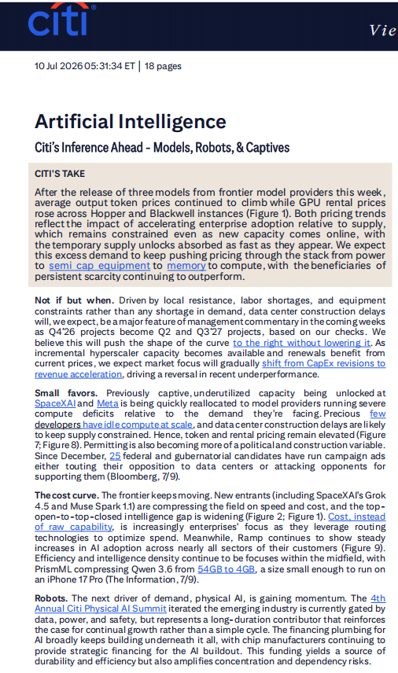
一句话核心
AI 的瓶颈已经从"要不要买"变成"买不到、建不起来"——制约因素是电力、施工和审批，不是需求。
背景与关键数据
图片是花旗 2026-07-10 发布的 18 页研报《Artificial Intelligence — Citi's Inference Ahead: Models, Robots, & Captives》。核心信息：
- Token 价格和 GPU 租赁价格双双上涨（Hopper 和 Blackwell 实例都涨）。这是最硬的证据——如果需求真在退潮，价格应该跌。价格涨说明企业级采用的加速跑赢了新增产能。
- "Not if but when"（不是会不会，而是什么时候）：数据中心建设延期的原因是当地居民反对（local resistance）、劳动力短缺、设备约束，而不是需求短缺。花旗预计原定 Q4'26 的项目会被推到 Q2/Q3'27。
- 一个有意思的政治细节：自去年 12 月以来，已有 25 位联邦和州级候选人在竞选广告中围绕数据中心表态（支持或反对）。数据中心正在变成一个政治议题——这是新增的、非市场的风险变量。
- "Small favors"：SpaceXAI 和 Meta 此前闲置的自用算力（captive capacity）正被快速重新分配给缺算力的模型厂商。
- 成本曲线：新进入者（Grok 4.5、Muse Spark 1.1）在速度和成本上压缩了竞争空间，"最顶级开源 vs 最顶级闭源"的智能差距正在拉大，但企业越来越用路由技术（routing，按任务难度自动分配到不同模型）来优化成本。PrismML 把 Qwen 3.6 从 54GB 压到 4GB——小到能跑在 iPhone 17 Pro 上。
- **机器人（Physical AI）**是下一个需求驱动，但目前被数据、电力和安全性卡住。
图片解读
这是研报封面页。关键句被标了下划线（花旗自己的超链接）：semi cap equipment（半导体设备）、memory（存储）——这两个是花旗点名的最大受益环节。理由链条是：算力短缺 → 涨价 → 涨价传导"从电力到计算的整条链"（pushing pricing through the stack from power to compute）→ 上游设备和内存最先受益。
另一个值得注意的表述：随着超大规模厂商（hyperscaler）产能陆续开出、续约受益，市场焦点会从"下调资本开支"转向"上调收入"（shift from CapEx revisions to revenue acceleration），从而逆转近期表现落后的局面（driving a reversal in recent underperformance）。这是一个明确的看多信号。
为什么重要 / 对市场和经济的含义
- 这条帖子是对市场上"AI 资本开支见顶论"的正面反驳。2026 年市场一直在争论：微软、Meta 削减 CapEx 指引是需求见顶还是节奏问题？花旗的答案是后者。
- 如果花旗对，受益顺序是：电力/公用事业 → 半导体设备（ASML、AMAT、LRCX）→ HBM/存储（SK 海力士、美光）→ GPU → 数据中心 REIT。注意用户 CLAUDE.md 的持仓列表里有 AMD、MU、AVGO、AMKR、FORM、AEHR、NVDA、XLU（公用事业 ETF）——几乎正好覆盖这条链。
- 对中国模型的判断值得单独划重点：花旗认为中国厂商不需要做出"全球最强"模型，靠性价比就能在企业级市场占位。这和帖 12（高盛）说的是同一件事——今天 Jason 连发两条讲这个，显然认为这是个大主题。
延伸知识
"供给约束型繁荣" vs "需求驱动型泡沫"：区分二者的最简判据就是价格方向。互联网泡沫（1999–2000）时，光纤带宽价格是暴跌的——大家疯狂铺光纤，但需求跟不上，最终 97% 的光纤是"暗光纤"（dark fiber），无人使用。而现在 GPU 租赁价、token 价格在上涨。这是花旗论证的骨架。当然，反方观点是："价格上涨也可能只是短期错配，一旦 2027 年产能集中释放，会重演光纤的剧本。"两种说法都不能证伪，要盯的领先指标是 GPU 现货租赁价和 token 价格是否见顶。
"路由（routing）"是什么：简单说就是给 AI 应用装一个"分诊台"。用户问"今天天气"这种简单问题，路由到便宜的小模型；问"帮我重构这段代码"，才路由到贵的大模型。这项技术一旦成熟，会大幅压低企业的 AI 单位成本，同时也意味着"最强模型"的溢价能力会被削弱——对 OpenAI/Anthropic 这类闭源厂商是压力，对 DeepSeek/Qwen 这类高性价比模型是机会。
帖 3 · 12:46 · #金融
帖子原文
Rating Dog 很多判断还是在线的
#金融#
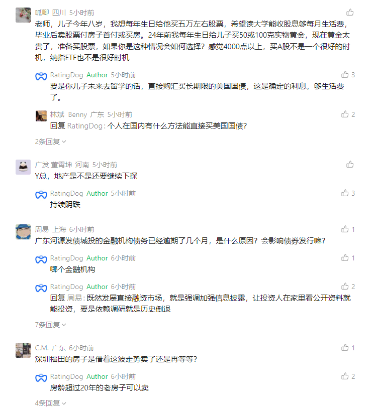
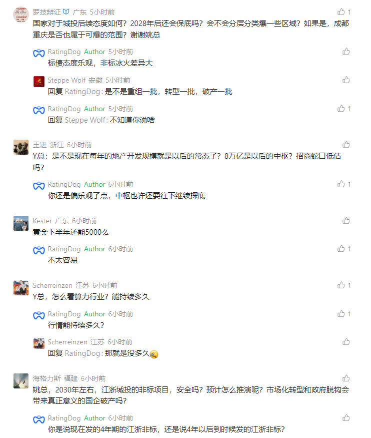
一句话核心
Jason 转发了另一位分析师（Rating Dog / "Y 总"/"姚总"）在评论区的快问快答截图，观点集中在地产继续阴跌、城投分层爆雷、黄金下半年难上 5000、算力行情不会太久——整体偏空。
背景与关键数据
两张图是知识星球评论区的问答截图。逐条梳理关键 Q&A：
| 提问 | Rating Dog 的回答 | 潜台词 |
|---|---|---|
| 给 8 岁儿子每年买 5 万股票，A股 4000 点以上是好时机吗？纳指 ETF 呢？ | "要是你儿子未来去留学的话，直接购汇买长期限的美国国债，这是确定的利息，够生活费了" | 对权益资产（尤其 A 股高位）不看好，宁可拿确定的美债票息 |
| 地产是不是还要继续下探？ | "持续阴跌" | 不是崩盘，是漫长的慢跌 |
| 8 万亿地产开发规模是以后的中枢吗？招商蛇口低估吗？ | "你还是偏乐观了点，中枢也许还要往下继续探底" | 连 8 万亿都算乐观 |
| 国家对城投后续态度？2028 年后还会保底吗？会不会分层分类爆一些区域？ | "标债态度乐观，非标冰火差异大" | 公开发行的城投债（标债）安全；非标（信托、定融）会分化爆雷 |
| 黄金下半年还能 5000 么 | "不太容易" | 对金价短期偏谨慎 |
| 怎么看算力行业？能持续多久？ | 反问"行情能持续多久？"→ 提问者接"那就是没多久" | 暗示算力行情（不是产业）时间有限 |
| 广东河源某城投的金融机构债务已逾期几个月，会影响债券发行吗？ | "既然发展直接融资市场，就是强调加强信息披露，让投资人在家里看公开资料就能投资，要是依赖调研就是历史倒退" | 讽刺当前信披质量 |
| 深圳福田的房子借这波走势卖了还是再等？ | "房龄超过 20 年的老房子可以卖" | 老破小没有未来 |
图片解读
图 1 和图 2 都是评论区的截图流。Rating Dog 头像旁标着 "Author"，说明这是他自己的星球。值得注意的是回答的极度简短——"持续阴跌"、"不太容易"、"标债态度乐观，非标冰火差异大"——这种言简意赅本身就是一种信号：他不打算给模糊空间。
为什么重要 / 对市场和经济的含义
- Jason 说"很多判断还是在线的"，等于背书。把这条和当天其他帖子放在一起看，Jason 的整体框架是：中国国内资产（地产、非标城投、A 股高位）风险仍在释放，机会在境外（美债票息）和产业链（AI/数字服务出口）。
- **"标债 vs 非标"**是理解中国城投风险最关键的一条分界线：
- 标债：在交易所/银行间公开发行、有评级、有信息披露的债券。因为一旦违约会引发系统性再融资危机（其他城投也发不出债了），所以中央有强烈动机兜底。
- 非标：信托贷款、定向融资工具（定融）、融资租赁、私募债等。不公开、单个规模小、违约不传染，所以"爆一个是一个"。这就是"冰火差异大"的意思。
- 注意提示：Rating Dog 这些是个人观点，不是投资建议，也未经交叉验证。他对黄金和算力的看空判断与 Jason 当天转的花旗观点（AI 产业链持续受益）其实方向不完全一致——花旗看好的是产业基本面，Rating Dog 谨慎的是二级市场行情的持续性。这两者可以同时成立（产业好但股价已经透支）。
延伸知识
"确定的利息"这个心智模型：Rating Dog 建议买长期限美债，本质是在做一个跨资产的风险溢价比较。当无风险利率足够高（比如 30 年美债 4.5%+）时，权益资产必须提供显著更高的预期回报才值得承担波动。用股权风险溢价（ERP = 股票预期收益率 − 无风险利率）这个指标看：无风险利率越高，ERP 被压缩得越厉害，股票的性价比就越差。这也是为什么"美联储是否加息"（帖 9）对所有资产定价都至关重要——它是分母。
帖 4 · 12:51 · #其他国家经济
帖子原文
zerohedge：伊朗拒绝与美国谈判，特朗普警告称 1000 枚导弹"装填并已锁定"。
#其他国家经济#
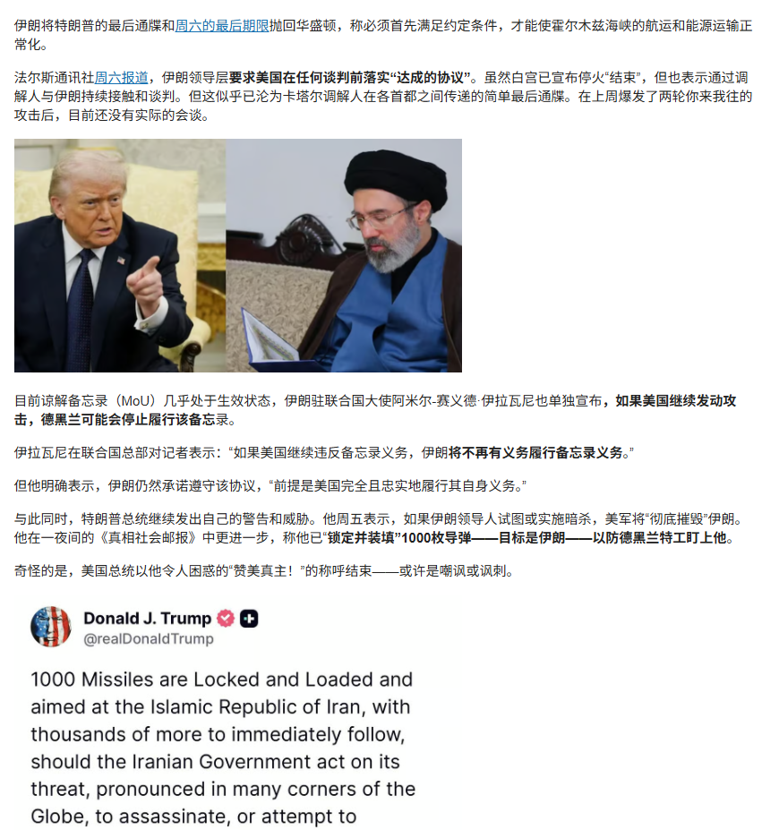
一句话核心
美伊谈判破裂，特朗普在 Truth Social 上放话已"锁定装填"1000 枚导弹瞄准伊朗——霍尔木兹海峡的通航风险重新回到桌面。
背景与关键数据
图片里的关键事实链：
- 伊朗把特朗普的最后通牒和周六的最后期限抛回华盛顿，称必须先满足约定条件，才能使霍尔木兹海峡的航运和能源运输正常化。
- 伊朗领导层要求美国在任何谈判前先落实"达成的协议"。白宫虽宣布停火"结束"，但仍通过卡塔尔调解人在各首都之间传话——没有实际会谈。
- 伊朗驻联合国大使伊拉瓦尼单独宣布：如果美国继续发动攻击，德黑兰可能会停止履行谅解备忘录（MoU）。但同时承诺"前提是美国完全且忠实地履行其自身义务"。
- 特朗普在 Truth Social 发帖："1000 Missiles are Locked and Loaded and aimed at the Islamic Republic of Iran, with thousands of more to immediately follow"——如果伊朗政府试图暗杀（美国领导人），美军将"彻底摧毁"伊朗。帖子以一句"赞美真主！"（Praise Allah）结尾，被 zerohedge 评为"或许是嘲讽或讽刺"。
图片解读
图片是 zerohedge 的中文译文页，包含：
- 上半部分：特朗普（左，在白宫椭圆办公室，手指前指的强硬姿态）与伊朗最高领导层（右，头戴黑色缠头、身着长袍，正在阅读文件）的并排照片——典型的"对峙"视觉修辞。
- 下半部分：特朗普 Truth Social 原帖截图（@realDonaldTrump，蓝色认证）。
为什么重要 / 对市场和经济的含义
- 霍尔木兹海峡是全球最重要的能源咽喉：全球约 20% 的石油消费量和大量 LNG 通过这条最窄处仅 33 公里的水道。一旦伊朗封锁或袭击过境船只，布伦特原油可能瞬间跳涨 20–50%。
- 传导路径：油价↑ → 全球通胀↑ → 各国央行被迫更鹰派 → 这恰好会强化帖 9（高盛）说的"美联储加息"情景。这两条帖子放在一起就是一个完整的宏观风险链条。
- 对资产：能源股（帖子作者持仓有 CVX）、国防军工（AVAV、KTOS、BKSY）是这类新闻的直接受益方向；航空（JETS、DAL、AAL）则是油价上涨的受害方向。
- 但也要注意："导弹锁定"这种表态在特朗普的语言体系里出现频率不低，市场对它的边际反应正在钝化。真正需要盯的是实物指标：霍尔木兹的船舶通行量、油轮保险费率（war risk premium）、以及布伦特的期限结构（现货升水 backwardation 是否陡峭化）。
延伸知识
"地缘风险溢价"如何在油价里体现：油价 = 供需基本面价格 + 风险溢价。风险溢价不是"油真的少了"，而是"市场为了防止油可能少了而愿意多付的保险费"。判断方法是看期货曲线的形状：
- Backwardation（现货升水，近月贵、远月便宜）：市场担心现在就缺油 → 真实的供应紧张。
- Contango（期货升水，远月贵）：现货充裕，市场只是在为未来的不确定性买单。
地缘冲突通常先推高近月合约，让曲线陡峭化。如果只是口头威胁而没有实际断供，风险溢价往往在几周内消散——2019 年沙特阿美遇袭、2024 年多次中东冲突都是这个剧本。
帖 5 · 13:00 · #其他国家经济
帖子原文
bloomberg：欧盟正在制定一项"团结工具"，用于支持那些将关键供应链从中国分散出去的企业，并在中欧发生贸易冲突、被采取报复措施时，缓冲这些企业受到的冲击。目前尚不清楚欧盟究竟需要投入多少资金，目前，欧盟对华贸易逆差已经超过 3600 亿欧元，约合 4110 亿美元，并波及所有成员国。这项工具是否能落地，得看欧盟成员国愿不愿意共同出钱。 西班牙和意大利目前青年失业率都超过 20%，贸易冲击正在进一步侵蚀欧洲的就业岗位。
#其他国家经济#
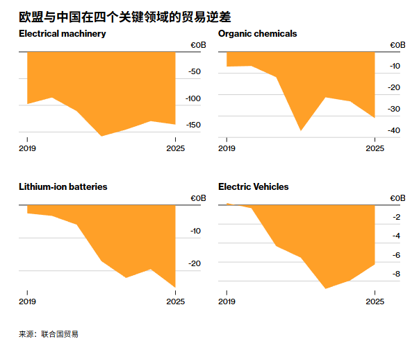
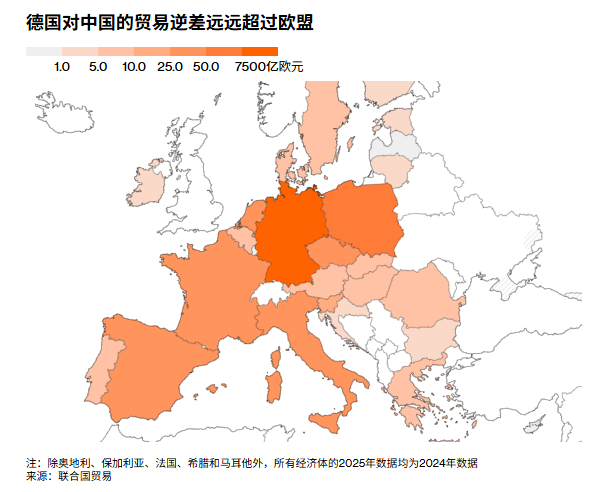
一句话核心
欧盟对华贸易逆差已达 3600 亿欧元，正在酝酿一个"团结工具"给去中国化的企业发补贴——但钱从哪来、成员国肯不肯掏，是个大问号。
背景与关键数据
- 贸易逆差 3600 亿欧元（约 4110 亿美元）：这个数字的意思是"欧盟从中国买的东西，比卖给中国的多 3600 亿欧元"。放在坐标里看，这大约相当于欧盟 GDP 的 2%，也接近美国对华逆差的历史峰值。
- "团结工具"（Solidarity Instrument）：这是欧盟的典型做法——用共同财政（common fiscal capacity）来分摊某个成员国单独承担不了的成本。类似的先例是疫情期间的 NextGenerationEU 复苏基金（7500 亿欧元）。
- 落地难点："得看欧盟成员国愿不愿意共同出钱"——这是欧盟所有共同财政工具的死穴。**德国、荷兰等"节俭国家"（frugal four）**历来反对共同举债；而最需要这笔钱的恰恰是南欧国家。
- 西班牙、意大利青年失业率 >20%：这是政治层面的火药——高青年失业 + 制造业岗位流失 = 民粹主义温床。
图片解读
- 图 1（四联面积图，来源：联合国贸易）：标题"欧盟与中国在四个关键领域的贸易逆差"，四个子图都是 2019 → 2025 的时间序列，橙色面积全部向下扩张（逆差扩大）：
- Electrical machinery（电气机械）：从约 −100 亿欧元恶化到 −150 亿欧元上下（中间一度跌破 −160 亿），是绝对值最大的一块。
- Organic chemicals（有机化学品）：从约 −8 亿一路恶化到 −35 亿欧元左右。
- Lithium-ion batteries（锂离子电池）：从接近 0 一路扩大到约 −23 亿欧元——这是斜率最陡的一条，几乎是从无到有。
- Electric Vehicles（电动车）：从 0 左右扩大到约 −7 亿欧元（2024 年一度到 −9 亿）。
- 读图要点：注意四张图的纵轴刻度完全不同（−150 vs −40 vs −20 vs −8）。电气机械的绝对规模最大，但电池和电动车的"从零到有"速度最快——这正是欧盟最焦虑的部分，因为它们直接冲击德国汽车产业的命脉。
- 图 2（欧洲热力地图）：标题"德国对中国的贸易逆差远远超过欧盟"。颜色越深＝逆差越大（图例：1.0 / 5.0 / 10.0 / 25.0 / 50.0 / 7500 亿欧元，注意这是对数刻度）。德国是唯一的深红色，法国、波兰、意大利、西班牙、荷兰是中等橙色，东欧和北欧偏浅。注释说明：除奥地利、保加利亚、法国、希腊、马耳他外，其余为 2025 年数据（这几国用 2024 年数据）。
- 读图要点：德国之所以颜色最深，一部分是统计口径问题——大量货物经汉堡、鹿特丹入关后再分发到其他成员国（"鹿特丹效应"）。但即便剔除转口，德国的机械和汽车产业与中国的直接竞争关系也是最强的。
为什么重要 / 对市场和经济的含义
- 这是全球供应链去风险化（de-risking）从口号走向掏钱的信号。如果落地，意味着欧洲企业把产线从中国搬走时能拿到真金白银的补贴——这会加速中国出口份额的结构性流失。
- 但**"钱从哪来"是真问题**。欧盟没有联邦级税收，任何共同工具都要成员国点头。历史上这类提案的落地率不高，或者最终规模远小于宣传。
- 对市场：这类新闻利好东南亚、墨西哥、印度的产能承接方，以及欧洲本土的电池/半导体（帖子作者持仓里的 SOI（Soitec，法国）、LPK（LPKF，德国）、XFAB（比利时）、IQE（英国）——这些欧洲半导体标的正好是"欧洲本土化"叙事的受益者）。
- 反向风险：中国的报复措施（稀土出口管制、对欧盟商品的反倾销调查）会直接打击德国车企和奢侈品。
延伸知识
贸易逆差本身不是"坏事"，但它的"结构"是：经济学上，贸易逆差意味着一个经济体在消费超过生产，用资本项目顺差（外国人来买你的资产）来平衡。真正让欧盟焦虑的不是逆差的数字，而是逆差的成分变化——
- 十年前欧盟从中国进口的是服装、玩具、家电（低附加值，欧洲本来也不生产）；
- 现在进口的是电动车、锂电池、电气机械（高附加值，直接替代欧洲本土的就业岗位）。
这就是所谓的"逆差的质量恶化"。同样是 100 亿欧元的逆差，进口 T 恤和进口汽车对本国产业的杀伤力完全不同。这也解释了为什么欧盟的政策工具从"反倾销关税"升级到"给企业发钱搬家"——关税只能守住价格，守不住技术代差。
帖 6 · 13:20 · #TAX
帖子原文
如人大财税研究所这篇论文，由于目前国内的回报率低于国外+债务率实际上陷入困境，所以资本管制+信息壁垒是最简单粗暴、最容易防守的方式，它延长了财政的可用空间，但也使得自己离"正常化"进一步远离
#TAX#
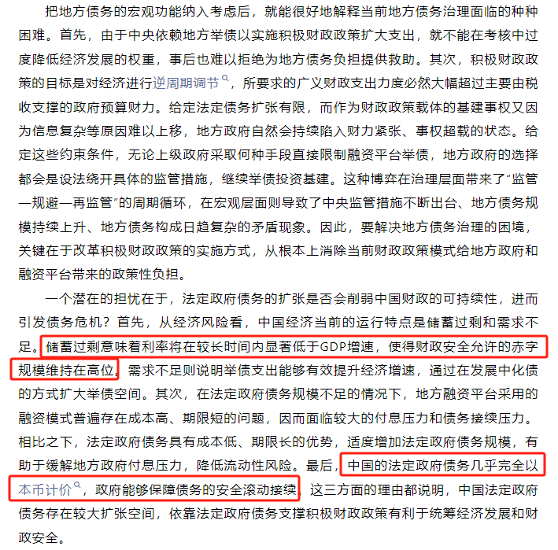
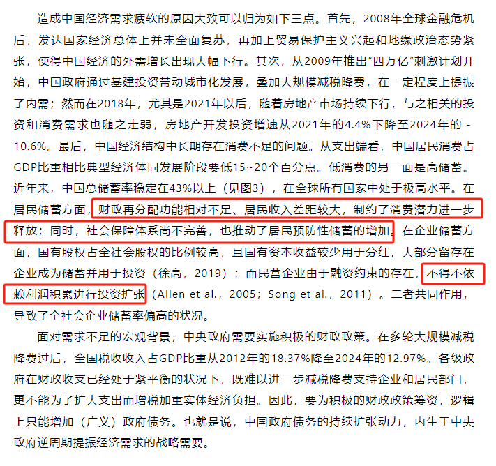
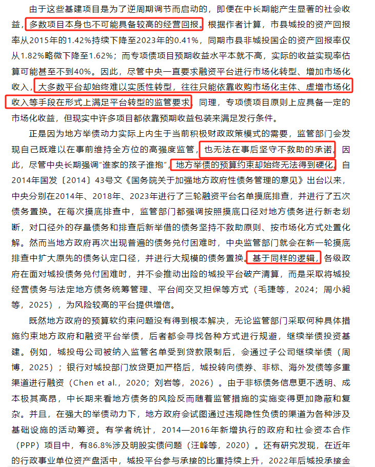
一句话核心
人大财税研究所论证"中国还有很大举债空间"，Jason 的批注很尖锐：这个"空间"是靠资本管制和信息不透明人为造出来的，代价是离市场化越来越远。
背景与关键数据
论文的核心论证链（图 1）：
- 储蓄过剩 → 利率长期低于 GDP 增速 → 财政安全允许的赤字规模维持在高位。这是关键的一步，学名叫 r < g 条件（利率 r 小于经济增长率 g）。当 r < g 时，债务/GDP 比率会自动下降——即使不还本，经济增长也会稀释债务。
- 需求不足 → 举债支出能有效提升经济增速 → 通过"发展中化债"（在发展中解决债务）。
- 中国的法定政府债务几乎完全以本币计价 → 政府能保障债务的安全滚动接续（不会像阿根廷那样因为美元债违约）。
论文的现实分析（图 2、图 3）：
- 需求疲软的三个原因：(a) 2008 年后外需下行；(b) 2018 年尤其 2021 年后地产持续下行，地产开发投资增速从 2021 年的 +4.4% 降到 2024 年的 −10.6%；(c) 长期消费不足——中国居民消费占 GDP 比重比同发展阶段的典型经济体低 15–20 个百分点，总储蓄率稳定在 43% 以上（全球极高水平）。
- 高储蓄的成因：财政再分配功能不足、收入差距大、社保体系不完善（预防性储蓄）；企业端国有股权占比高、分红少、利润留存做投资。
- 税收占 GDP 比重从 2012 年的 18.37% 降到 2024 年的 12.97%——减税降费之后，财政收支已处于紧平衡，所以"要积极财政，逻辑上只能增加（广义）政府债务"。
- 地方债的死结（图 3）：城投的资产回报率从 2015 年的 1.42% 一路降到 2023 年的 0.41%；县市非城投国企从 1.82% 微降到 1.62%。专项债项目的实际收益实现率估算可能不到 40%。中央长期强调"谁家的孩子谁抱"，但每次地方普遍出现兑付困难，就会扩大债务认定口径 + 大规模债务置换（2014、2018、2023 三轮融资平台名单摸底，五次债务置换）。结果就是"预算软约束"始终无法硬化。研究显示 2014–2016 年新增执行的 PPP 项目中 86.8% 涉及明股实债。
图片解读
三张都是论文正文的截图，红框是 Jason 自己划的重点。他划的三处最关键：
- 图 1 红框："储蓄过剩意味着利率将在较长时间内显著低于 GDP 增速，使得财政安全允许的赤字规模维持在高位" + "中国的法定政府债务几乎完全以本币计价" → 这是论文"我们还能借"的两大支柱，也正是 Jason 要挑战的地方。
- 图 2 红框："财政再分配功能相对不足、居民收入差距较大，制约了消费潜力进一步释放；同时，社会保障体系尚不完善，也推动了居民预防性储蓄的增加" + 民企"不得不依赖利润积累进行投资扩张"。
- 图 3 红框（最狠的三处）：
- "多数项目本身也不可能具备较高的经营回报"
- "大多数平台却始终难以实质性转型，往往只能依靠收购市场化主体、虚增市场化收入等手段在形式上满足平台转型的监管要求"
- "也无法在事后坚守不救助的承诺" / "地方举债的预算约束始终无法得到硬化"
为什么重要 / 对市场和经济的含义
Jason 的批注是理解这条帖子的钥匙。把他那句话拆开：
- "国内的回报率低于国外" —— 城投资产回报率 0.41%，而美债票息 4%+。理性资本会想往外跑。
- "+债务率实际上陷入困境" —— 广义政府债务（含城投隐性债务）已经很高，但回报又极低。
- "所以资本管制 + 信息壁垒是最简单粗暴、最容易防守的方式" —— 论文说"r < g，所以赤字空间大"。但 Jason 指出：这个低利率 r 不是市场自然形成的，而是资本管制把钱锁在国内、只能买低收益的国内资产造成的。如果放开资本流动，国内利率会被迫向国外利率靠拢，r < g 的条件立刻消失，"赤字空间"就不存在了。
- "延长了财政的可用空间，但也使得自己离'正常化'进一步远离" —— 用管制换时间，但每多用一天，市场化改革的难度就更大一分。
这是今天技术含量最高的一条帖子。它触及了一个根本问题："我们还有多少举债空间"这个问题的答案，取决于你假设资本能不能自由流动。
对市场：这解释了为什么中国的国债收益率能长期维持在低位（管制下的"资产荒"），也解释了为什么人民币面临持续的贬值压力（资本想出去但出不去），以及为什么居民会拼命买黄金和境外资产（帖 3 里 Rating Dog 建议买美债，本质是同一个逻辑）。
延伸知识
r < g 与"财政的免费午餐"：2019 年，前 IMF 首席经济学家 Olivier Blanchard 在美国经济学会主席演讲中提出了一个震撼的论点——当利率 r 长期低于增长率 g 时，政府发债的"财政成本"接近于零，因为债务/GDP 比率会被增长自动稀释。这个论断为发达国家的高债务提供了理论辩护。
但 Blanchard 自己也强调了三个前提：
- r < g 必须是可持续的——如果利率突然上行（比如通胀或加息），假设立刻失效。
- 借来的钱必须有正的社会回报——如果投到 0.41% 回报的项目上，那就是纯粹的浪费。
- 市场必须相信你能还——一旦信心逆转，利率会跳升，形成自我实现的债务危机（欧债危机的剧本）。
人大这篇论文用的正是 Blanchard 框架。Jason 的质疑打在第 1 条前提上：中国的 r < g 是管制维持的，不是市场定价的。这是一个非常经典的宏观辩论——"低利率是政策选择还是市场结果"。想深入的话，可以顺着 Blanchard 2019 年的《Public Debt and Low Interest Rates》和 Reinhart & Sbrancia 的 "金融抑制（financial repression）" 概念读下去。后者定义得更直白：通过强制储户接受低于通胀的存款利率，把财富从储蓄者悄悄转移给债务人（政府）——本质是一种隐性税收。
帖 7 · 13:29 · #经济数据
帖子原文
五矿：如果说"新三样"的崛起说明中国货物出口已经从低附加值制造走向高端制造，那么下一阶段外贸升级的重点，则是提高服务出口能力。我们认为，未来中国服务出口可能形成两种格局：一类是依托商品出口形成的服务出口，另一类是相对独立的数字服务出口。前者依托中国制造业出海和高端产品出口，后者依托软件、云平台、数据处理、AI 模型和算力能力。两条路径并行，可能共同构成中国服务贸易改善的增量来源。
#经济数据#
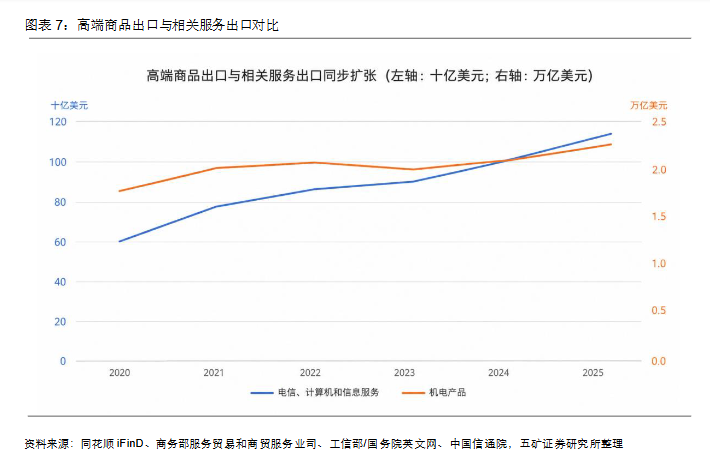
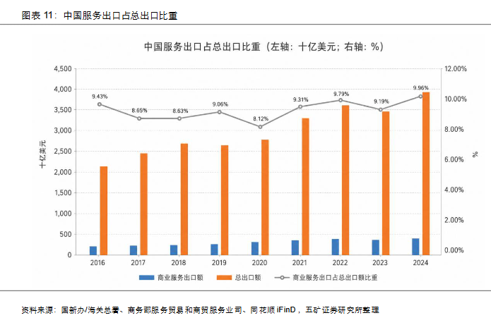
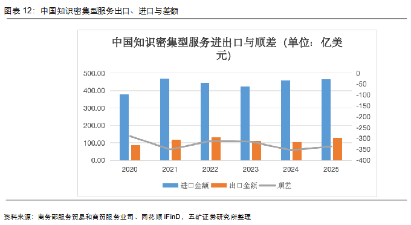
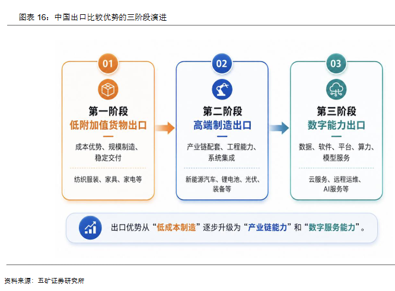
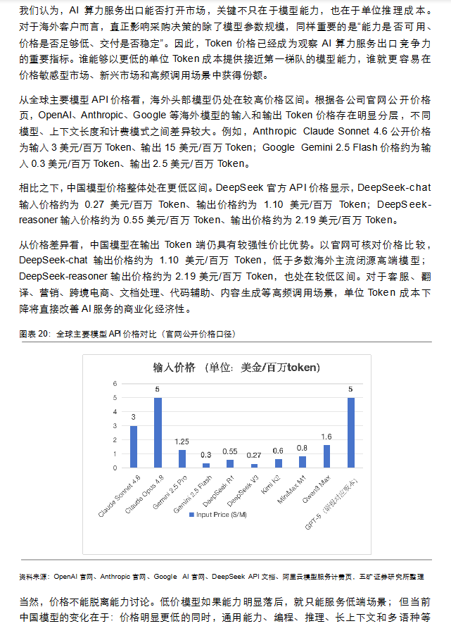
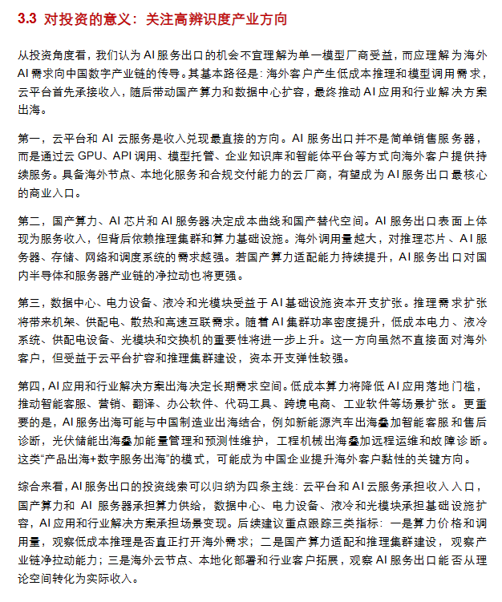
一句话核心
中国出口的下一站是卖服务不是卖货——尤其是"AI 服务出口"（云、算力、模型），五矿给出了一条从云平台 → 国产算力 → 数据中心/电力 → AI 应用的完整投资链条。
背景与关键数据
- "新三样" = 新能源汽车、锂电池、光伏产品。这是中国出口从"衬衫玩具"升级到"高端制造"的标志。
- 但服务出口是短板：中国商业服务出口占总出口比重常年只有 8–10%，而全球平均在 20%+，发达国家更高。
- 知识密集型服务是巨额逆差：中国每年在这块要付出去 400–460 亿美元，收回来只有 90–130 亿美元，顺差常年在 −300 亿美元左右（其实是逆差）。这块包括：知识产权使用费、专业咨询、研发服务等。
- AI 是破局点：模型 API 价格是中国的核武器。
图片解读
- 图 1（图表 7：高端商品出口与相关服务出口对比）：双轴折线。左轴（十亿美元）是**"电信、计算机和信息服务"出口**（蓝线），从 2020 年的 60 亿升到 2025 年的 115 亿美元（近乎翻倍）；右轴（万亿美元）是机电产品出口（橙线），从 1.7 万亿升到 2.2 万亿。
- 读图要点：两条线同步上升，这是五矿论点的实证——"卖机器"和"卖跟机器配套的服务"是绑定的。中国机电产品出口的绝对规模（万亿级）远大于信息服务（百亿级），这个 100 倍的落差正是想象空间所在。
- 图 2（图表 11：中国服务出口占总出口比重）：柱状 + 折线。蓝柱是商业服务出口额（左轴，十亿美元），橙柱是总出口额，灰线是服务占比（右轴，%）。
- 2016 年 9.43% → 2017 年跌到 8.65% → 2020 年低点 8.12% → 2022 年 9.79% → 2023 年回落 9.19% → 2024 年 9.96%（历史高位）。
- 读图要点：这条灰线十年没有实质突破 10%。它是一条"被压抑的线"——中国的货物出口太强了，反而把服务占比的分母撑大了。要突破 10%，服务出口必须比货物出口跑得更快。
- 图 3（图表 12：中国知识密集型服务进出口与顺差）：蓝柱=进口额，橙柱=出口额，灰线=顺差（右轴，注意是负值区间 0 到 −400 亿美元）。
- 进口常年在 380–470 亿美元，出口只有 90–130 亿美元，顺差（实为逆差）在 −280 到 −360 亿美元之间波动。
- 读图要点：橙柱（出口）在 2025 年抬到最高的 ~130 亿美元，蓝柱基本持平，所以灰线的逆差在 2025 年略有收窄。这是一个微弱但真实的改善信号。
- 图 4（图表 16：中国出口比较优势的三阶段演进）：流程图。
- 第一阶段：低附加值货物出口（成本优势、规模制造、稳定交付）→ 纺织服装、家具、家电
- 第二阶段：高端制造出口（产业链配套、工程能力、系统集成）→ 新能源汽车、锂电池、光伏、装备
- 第三阶段：数字能力出口（数据、软件、平台、算力、模型服务）→ 云服务、远程运维、AI 服务
- 底部结论："出口优势从低成本制造逐步升级为产业链能力和数字服务能力"。
- 图 5（图表 20：全球主要模型 API 价格对比，输入价格 美元/百万 token）：柱状图，这是全帖的杀手锏。
- Claude Sonnet 4.6: $3 | Claude Opus 4.8: $5 | Gemini 2.5 Pro: $1.25 | Gemini 2.5 Flash: $0.3
- DeepSeek R1: $0.55 | DeepSeek V3: $0.27 | Kimi k2: $0.6 | MiniMax M1: $0.8 | Qwen3 Max: $1.6 | GPT-5（限时对话服务）: $5
- 读图要点：DeepSeek V3 的 $0.27 是 Claude Opus 4.8 的 1/18、GPT-5 的 1/18。正文还给了输出价格：DeepSeek-chat 输出 $1.10/百万 token，而 Claude Sonnet 4.6 输出 $15/百万 token——输出端差 13 倍以上。这就是"性价比"的量化含义。
- 五矿的谨慎表述也要看到："价格不能脱离能力讨论。低价模型如果能力明显落后，就只能服务低端场景。"但他们认为中国模型的变化在于价格明显更低的同时，通用能力、编程、推理、长上下文和多语种也在跟上。
- 图 6（3.3 对投资的意义：关注高辨识度产业方向）：这是最有价值的一页，给出了完整的传导路径和四条投资主线：
- 基本路径：海外客户产生低成本推理和模型调用需求 → 云平台首先承接收入 → 随后带动国产算力和数据中心扩容 → 最终推动 AI 应用和行业解决方案出海。
- 主线一：云平台和 AI 云服务 —— 收入兑现最直接的方向。不是简单卖服务器，而是通过云 GPU、API 调用、模型托管、企业知识库和智能体平台等方式提供持续服务。具备海外节点、本地化服务和合规交付能力的云厂商，有望成为最核心的商业入口。
- 主线二：国产算力、AI 芯片和 AI 服务器 —— 决定成本曲线和国产替代空间。海外调用量越大，对推理芯片、AI 服务器、存储、网络和调度系统的需求越强。
- 主线三：数据中心、电力设备、液冷和光模块 —— 受益于 AI 基础设施资本开支扩张。随着 AI 集群功率密度提升，低成本电力、液冷系统、电源设备、光模块和交换机的重要性将进一步上升。（注意：这条主线与帖 2 花旗的判断完全一致）
- 主线四：AI 应用和行业解决方案出海 —— 低成本算力才降低 AI 应用落地门槛。"产品出海 + 数字服务出海"的模式（如新能源车出海叠加智能客服和售后诊断，光储能出海叠加能量管理和预测性维护，工程机械出海叠加远程运维和故障诊断）。
- 五矿建议跟踪的三类指标：① AI 价格和调用量（观察低成本推理是否直正打开海外需求）；② 国产算力适配和推理集群规模（观察产业链拉动能力）；③ 海外云节点、本地化部署和行业客户拓展（观察 AI 服务出口能否从"理论空间"转化为"实际收入"）。
为什么重要 / 对市场和经济的含义
- 这是今天最完整的一条投资框架，而且和帖 2（花旗）、帖 12（高盛）形成三角互证：
- 花旗说：全球 AI 供给不足，电力和数据中心是瓶颈。
- 高盛说：中国大模型已跨过商业可用门槛。
- 五矿说：所以中国可以靠低价 AI 服务出口，带动云 → 算力 → 电力 → 应用的整条链。
- Jason 连发三条，等于在说：这是他认为的中国下一个结构性机会。
- 可验证的领先指标：DeepSeek/阿里云/腾讯云的海外 API 调用量、国产 AI 芯片（寒武纪、华为昇腾）的出货、以及光模块和液冷厂商的订单。这些比股价先动。
- 风险点：五矿自己在图 5 正文里提到的"任何更严格的海外市场准入限制"——如果美欧以安全为由禁止中国模型的 API 服务（类似 TikTok 的剧本），这条链的海外收入端会直接被切断。高盛在帖 12 里也把这个列为三大风险之一。
延伸知识
"服务贸易顺差"为什么是发达经济体的标志：看一个国家在全球分工中的位置，看它卖什么，比看它卖多少更重要。
- 美国：货物贸易巨额逆差（每年 −1 万亿美元），但服务贸易巨额顺差（+2500 亿美元以上）——它卖的是软件、金融、知识产权、教育、影视。
- 德国：货物顺差，服务逆差——典型的制造业国家。
- 中国：货物巨额顺差（+9000 亿美元），服务逆差（−2000 亿美元左右，主要是旅游、知识产权使用费、运输）。
服务贸易的毛利率通常是货物贸易的 3–5 倍（卖一台机器毛利 10–15%，卖一套软件毛利 70–80%）。所以从"货物顺差"走向"服务顺差"，本质是从赚辛苦钱走向赚聪明钱。这也是为什么"AI 服务出口"如果真的跑通，对中国的意义远大于多卖 100 万辆车——它改变的是国民收入的构成。
再补一个概念："数字服务出口"的统计困难。传统海关能数清楚有多少个集装箱出去，但一次 API 调用是没有海关的。这意味着这类出口很可能被系统性低估，同时也意味着它极易被非关税壁垒（数据本地化法规、安全审查）拦截。这是这条赛道最大的不确定性。
帖 8 · 13:31 · #TAX
帖子原文
医保局：2021–2025 年，每位退休职工对应的在职缴费人数持续减少，医保基金的人口结构压力开始明显加大。
#TAX#
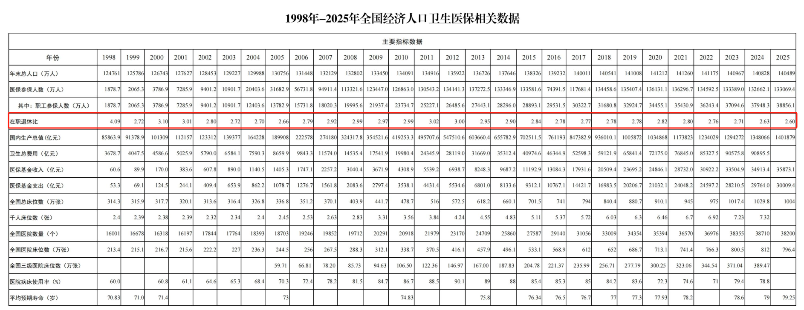
一句话核心
在职退休比从 1998 年的 4.09 掉到 2025 年的 2.60——27 年前 4 个人养 1 个退休者，现在只剩 2.6 个人。这是中国医保体系最硬的一条约束。
背景与关键数据
"在职退休比" = 在职职工参保人数 ÷ 退休职工参保人数。这个数字直接决定了**现收现付制（pay-as-you-go）**医保基金的可持续性——因为在职的人缴费，退休的人花钱。
从表格里提取关键序列：
| 年份 | 在职退休比 | 医保基金收入（亿元） | 医保基金支出（亿元） | 结余（亿元） |
|---|---|---|---|---|
| 1998 | 4.09 | 60.6 | 53.3 | +7.3 |
| 2005 | 2.66 | 1405.3 | 1078.7 | +326.6 |
| 2011 | 3.02（近期高点） | 5539.2 | 4431.4 | +1107.8 |
| 2015 | 2.84 | 11192.9 | 9312.1 | +1880.8 |
| 2020 | 2.82 | 24846.1 | 21032.1 | +3814.0 |
| 2021 | 2.80 | 28732.0 | 24048.2 | +4683.8 |
| 2022 | 2.76 | 30922.2 | 24597.2 | +6325.0 |
| 2023 | 2.71 | 33504.9 | 28210.5 | +5294.4 |
| 2024 | 2.63 | 34913.4 | 29764.0 | +5149.4 |
| 2025 | 2.60 | 35873.1 | 30029.4 | +5843.7 |
其他值得注意的数据：
- 年末总人口：2021 年 141260 万 → 2025 年 140489 万（连续 4 年下降，累计减少约 770 万）。
- 医保参保人数：2021 年 136131 万 → 2025 年 133069 万（减少约 3000 万）。参保人数下降得比总人口快——说明有人在"退保"。
- 职工参保人数：仍在增长（2021 年 35430.9 万 → 2025 年 38856.1 万），说明减少的主要是城乡居民医保参保者。
- 平均预期寿命：2021 年 78.2 岁 → 2025 年 79.25 岁（还在上升）。
图片解读
这是一张 1998–2025 年的全国经济人口卫生医保数据总表，红框圈出的就是**"在职退休比"这一行**。
读图要点——这一行的形状是：1998 年 4.09 起步（因为医保刚建立，还没多少人退休），1999 年骤降到 2.72（覆盖面扩大），随后在 2.7–3.0 之间震荡了整整 20 年（2011 年高点 3.02），然后从 2015 年开始单边下滑：2.84 → 2.82 → 2.80 → 2.76 → 2.71 → 2.63 → 2.60。
过去 10 年跌了 0.24，但过去 4 年就跌了 0.20——下滑在加速。这正是"人口结构压力开始明显加大"的准确含义。
同时看结余：虽然收入仍大于支出（2025 年结余 5843.7 亿），但要注意 2024 年的结余（5149.4 亿）比 2022 年（6325 亿）少了近 1200 亿——安全垫在变薄。
为什么重要 / 对市场和经济的含义
- 这条帖子和帖 1（生育率）是同一枚硬币的两面。Jason 在同一天发这两条，绝不是巧合：
- 帖 1：分子端——如果不发钱，未来的缴费人口会继续萎缩。
- 帖 8：分母端——退休人口在膨胀，而且他们活得更久（预期寿命 79.25 岁）。
- 两头一挤，现收现付制在数学上就走不通了。
- 测算一下：1998 年 4.09 个人养 1 个，每人负担 1/4.09 = 24%；2025 年 2.60 个人养 1 个，每人负担 1/2.60 = 38%。每个在职者的实际负担上升了 58%。如果趋势延续到 2.0（约在 2035 年前后），负担会到 50%。
- 政策含义（这也是为什么标签是
#TAX#）：解决路径只有四条，且都不受欢迎——- 提高缴费率 → 加重企业和个人负担（但税收占 GDP 已从 18.37% 降到 12.97%，加税空间有限）
- 降低待遇 → 报销比例下调、目录收窄（已经在做，比如 DRG/DIP 支付改革）
- 延迟退休 → 直接改善分母（中国已在推进）
- 提高生育率 → 长期改善分子（就是帖 1 说的事，但要等 20 年才见效）
- 对市场：医保控费是中国医药行业最大的长期逆风。集采（带量采购）、DRG/DIP 支付改革本质上都是"分母压力"倒逼出来的。反过来，**自费市场（消费医疗、创新药出海、商业健康险）**是这个趋势下的受益方向。用户持仓里的 HIMS（美国远程医疗/自费模式）和 NVO（诺和诺德，GLP-1 减重药，大量自费）某种程度上就是"公共医保撑不住 → 自费市场扩张"这个全球性逻辑的映射。
延伸知识
"人口抚养比"与"人口红利"的算术：这张表揭示的是中国正在从人口红利（demographic dividend）转向人口负债（demographic tax）。
所谓人口红利，是指劳动年龄人口（15–64 岁）占比高、抚养负担轻的那个窗口期。中国的这个窗口在 2010 年左右见顶（劳动年龄人口占比 74.5%）。窗口关闭后，同一批人开始退休，抚养比迅速恶化——红利期越长越陡，负债期就越短越陡，因为是同一批人在两端。
国际对标：日本的在职退休比在 1990 年约为 5.8，2020 年降到约 2.0；德国目前约 2.1。中国现在的 2.60 大约相当于日本 2005 年的水平，但中国的老龄化速度快得多——日本从 7% 老龄化率到 14% 用了 24 年，中国只用了 23 年，而中国是在人均 GDP 远低于日本当年的水平上做到的。这就是**"未富先老"**的精确含义。
一个反直觉的点：医保基金现在还是收大于支的（2025 年结余 5843 亿）。这会给人"还很安全"的错觉。但现收现付制的特点是——在临界点之前一切正常，跨过临界点就是断崖。因为收入端（在职人数）和支出端（退休人数）是同时向相反方向变化的。这也是为什么医保局要在此刻发出预警。
帖 9 · 13:47 · #金融
帖子原文
高盛：未来几个月，美联储货币政策路径的市场预期分歧非常大。我们的经济学家基准预测认为，FOMC（联邦公开市场委员会）将在今年维持政策利率不变，但他们也赋予美联储加息情景约 25% 的概率。相比之下，市场定价更加鹰派。当前利率市场隐含的基准情景是：到 2027 年年中，美联储累计加息接近 50 个基点（0.50 个百分点），当然，这一预期本身也存在较大的不确定性。期权市场的定价则显示，美联储未来加息的概率超过 50%，但与此同时，市场也认为降息或继续按兵不动的可能性依然相当可观。我们与客户的交流也反映出类似情况：投资者对于未来货币政策的判断高度分散。不仅如此，对于无论美联储最终采取哪种政策路径，将如何影响美国股市，投资者之间的看法也出现了异常大的分歧。
#金融#
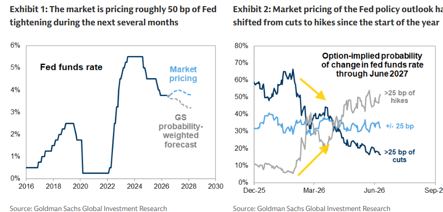
一句话核心
市场已经从"什么时候降息"翻转到"会不会加息"——期权隐含加息概率已超 50%，而高盛自己的经济学家只给 25%。这是当下最大的宏观分歧。
背景与关键数据
先解释几个术语：
- 基点（bp, basis point） = 0.01 个百分点。50 bp = 0.5 个百分点。
- FOMC：美联储的利率决策委员会，一年开 8 次会。
- 期权隐含概率：从利率期权（如 SOFR options）的价格倒推出来的、市场"真金白银"押注的概率分布。它比调查问卷可信，因为下注要花钱。
关键数字：
| 主体 | 对美联储路径的判断 |
|---|---|
| 高盛经济学家（基准） | 今年维持不变，加息概率 25% |
| 利率市场定价（基准） | 到 2027 年年中累计加息约 50 bp |
| 期权市场定价 | 加息概率 >50% |
| 高盛客户 | 高度分散，没有共识 |
图片解读
两张图都来自 Goldman Sachs Global Investment Research。
Exhibit 1（左，"市场正在为未来几个月约 50bp 的紧缩定价"）：
- 横轴 2016 → 2030，纵轴联邦基金利率 0–6%。
- 深蓝实线（历史）：2016–2018 从 0.5% 逐步加到 2.5%（第一轮加息）→ 2020 年疫情断崖跌回 0.25% → 2022 年开始史上最陡加息，冲到 5.5% 峰值（2023） → 2024–2025 逐步降到约 3.75%。
- 浅蓝虚线（Market pricing，市场定价）：从 2026 年当前水平向上翘，到 2028 年在 4% 附近——即市场预期要重新加息。
- 灰色虚线（GS probability-weighted forecast，高盛概率加权预测）：从当前水平向下走，到 2028 年在 3.2% 附近——即高盛认为还会降息。
- 读图要点：两条虚线在 2026 年之后分道扬镳，形成一个显眼的"剪刀差"，2028 年的分歧接近 80 bp。这张图一眼就能看出"高盛 vs 市场"的对立。
Exhibit 2（右，"年初以来市场对美联储政策的定价已从降息转向加息"）：
- 横轴 Dec-25 → Sep-26，纵轴 0–80%，画的是**"到 2027 年 6 月联邦基金利率变化的期权隐含概率"**。
- 深蓝线（>25bp of cuts，降息超 25bp 的概率）：从 2025 年 12 月的 ~60% 一路下滑到 2026 年 6 月的 ~18%（黄色箭头 1 标注这个下行）。
- 灰线（>25bp of hikes，加息超 25bp 的概率）：从 2025 年 12 月的 ~8% 一路飙升到 2026 年 6 月的 ~52%（黄色箭头 2 标注这个上行）。
- 浅蓝线（+/- 25bp，基本不变）：全程在 30–40% 之间横盘。
- 读图要点：深蓝线和灰线在 2026 年 3 月前后发生"死叉/金叉"式交叉——这就是市场预期反转的时刻。到 6 月，加息概率已经反超降息概率近 3 倍。半年内，市场把一个"降息故事"彻底改写成了"加息故事"。
为什么重要 / 对市场和经济的含义
- 利率是所有资产的分母。如果美联储真的加息 50bp，影响是全方位的：
- 成长股/科技股：贴现率上升，估值压缩（这是对帖 2、帖 7 那套 AI 多头逻辑最大的威胁——产业再好，估值也要被利率打折）
- 美债：收益率上升，价格下跌（但注意帖 13 说赤字改善会压低收益率——这是相反的力）
- 美元：走强 → 对新兴市场和黄金是压力（呼应帖 3 Rating Dog 说"黄金 5000 不太容易"）
- 黄金：实际利率上升是黄金的最大天敌
- "投资者高度分散"本身就是信息。当市场没有共识时，波动率会上升，任何一个数据（CPI、非农）都可能引发剧烈的方向切换。这种环境下，做方向的胜率低，做波动率的性价比高。
- **为什么市场会转向加息预期？**帖子没直接说，但可以从当天其他帖子拼出来：关税推高商品价格 + 地缘冲突（帖 4，伊朗）推高油价 + AI 数据中心抢电（帖 2）推高电价 → 通胀重新抬头 → 美联储被迫转鹰。
- 对用户持仓的直接含义：CLAUDE.md 里的持仓大量是高 beta 的半导体和 AI 链（NVDA、AMD、AVGO、MU、AAOI、COHR、LITE、NBIS、IREN…），这些是利率最敏感的资产。如果加息情景兑现，产业逻辑再好也扛不住估值压缩。这条帖子是今天对持仓最有警示意义的一条。
延伸知识
为什么"加息"在 2026 年重新回到桌面？这在两年前是不可想象的。理解这个转变，要抓住一个核心概念——"中性利率（r, r-star）"上移*。
中性利率是指"既不刺激也不抑制经济"的那个利率水平。2010 年代，大家普遍认为 r* 很低（1% 左右实际利率），因为人口老龄化、储蓄过剩、生产率低迷。但 2020 年代出现了三个结构性变化，可能把 r* 推高了：
- 财政持续扩张（政府大量发债，抢占储蓄）
- 供应链重构 + 地缘对抗（去全球化 = 更高的成本 = 更高的通胀中枢）
- AI 资本开支狂潮（帖 2 说的电力和数据中心投资，是实打实的资本需求激增）
如果 r* 真的上移了，那么美联储现在 3.75% 的利率可能根本不是"限制性"的，反而是"宽松"的——这就是为什么会有人押注加息。
一个实用的判断工具：盯 5y5y forward inflation swap（5 年后开始的 5 年期通胀互换）。这是市场对"长期通胀中枢"的定价，剔除了短期噪音。如果它持续站上 2.5%，说明市场真的相信通胀中枢上移了，加息就不是虚张声势。
帖 10 · 13:56 · #经济数据
帖子原文
zerohedge：中国在周五早些时候的轨道发射测试中成功将长征 10 号 B 火箭的一级助推器送上浮动驳船着陆，标志着可重复使用发射技术的首个重大进展，尽管落后了埃隆·马斯克的 SpaceX 大约十年。欧洲？
#经济数据#
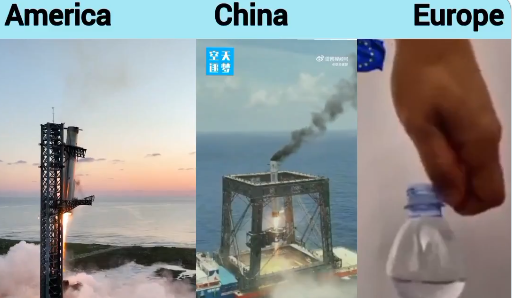
一句话核心
中国首次实现火箭一级助推器海上驳船回收（比 SpaceX 晚约 10 年）；Jason 用一句"欧洲？"和一张梗图，辛辣地点出欧洲在这场技术竞赛里的缺席。
背景与关键数据
- 可重复使用火箭是航天成本的分水岭。传统一次性火箭，每次发射相当于用完就扔掉一架波音 747。SpaceX 的猎鹰 9 号通过回收一级（占火箭成本的 ~70%），把每公斤入轨成本从 ~$10,000 降到 ~$1,500，最新的星舰目标是 $100 以下。
- 长征 10 号是中国新一代重型运载火箭，主要目标是载人登月。10 号 B 是其可重复使用的变体。
- "落后 SpaceX 大约十年"：SpaceX 首次成功海上驳船回收是 2016 年 4 月（CRS-8 任务）。中国现在是 2026 年——正好 10 年。
图片解读
这是一张三联梗图（meme），标题分别是 America / China / Europe：
- America（左）：SpaceX 猎鹰火箭在夕阳中垂直降落到海上平台，尾焰喷薄，画面壮观。
- China（中）：长征 10 号 B 助推器降落到海上驳船（画面里有"立大功"字样的中文水印和 CCTV 台标），黑烟滚滚，明显是真实的电视直播画面。
- Europe（右）：一只手（袖口有欧盟蓝色星圈标志）捏着一个塑料瓶往下扔——纯粹的嘲讽。
读图要点：Jason 那句"欧洲？"配上这张图，是典型的中欧美产业能力对比的表达。这不是一条严肃的数据帖，而是一条观点帖——它的信息量在于Jason 的立场，而不是新闻本身。
为什么重要 / 对市场和经济的含义
- 表面：太空竞赛的技术里程碑。
- 实质：这条帖子标签是
#经济数据#而不是"科技"，说明 Jason 想说的是产业竞争格局。把它和帖 5（欧盟"团结工具"）放在一起读，逻辑就通了：- 帖 5：欧盟对华逆差 3600 亿欧元，正在用补贴请求企业撤离中国。
- 帖 10：但欧洲在最前沿的技术（可复用火箭）上根本没有牌。
- Jason 的潜台词：欧洲的问题不是"中国太便宜"，而是**"欧洲自己不行了"**——补贴解决不了技术代差。
- 对市场：中国航天商业化（可复用火箭 → 卫星发射成本下降 → 卫星互联网、遥感）是一条正在打开的赛道。用户持仓里的 BKSY（BlackSky，卫星遥感） 和 AVAV（AeroVironment） 属于这个大主题的美股映射。但要提醒：这类"叙事驱动"的板块，估值往往跑在业绩前面很远。
延伸知识
"落后十年"到底意味着什么？——技术追赶中的**"S 曲线"**概念。
技术进步不是线性的，而是 S 形的：缓慢起步 → 陡峭加速 → 逼近极限后放缓。追赶者的优势在于：它知道路是通的。SpaceX 花了 5 年、炸了十几枚火箭才证明"海上回收可行"；后来者不需要重复这个探索成本，只需要复制工程实现。
所以"落后十年"这个说法要分两层看：
- 在已被验证的技术上（一级回收），追赶速度可以很快——中国可能只需 2–3 年就能追平成熟度。
- 在未被验证的技术上（星舰的完全复用、轨道加注），追赶者仍然要面对同样的探索不确定性。
这个框架同样适用于 AI（见帖 2、7、12）：中国模型在"复制已被验证的架构 + 优化成本"上极其高效（DeepSeek 的价格优势），但在"探索下一代范式"上，仍要面对和 OpenAI/Anthropic 一样的不确定性。这是理解"中国 AI 追赶"最诚实的框架。
帖 11 · 14:11 · #经济数据
帖子原文
搜狐：消费之万亿城市观察
#经济数据#
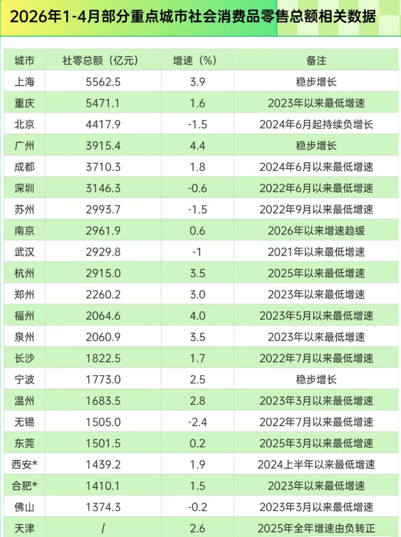
一句话核心
2026 年 1–4 月，21 个万亿 GDP 城市里有 5 个社零负增长，绝大多数创下多年最低增速——北京 −1.5%、深圳 −0.6%、苏州 −1.5%、武汉 −1%、无锡 −2.4%、佛山 −0.2%。中国的消费在肉眼可见地降温。
背景与关键数据
"社零"= 社会消费品零售总额，是中国衡量消费的核心指标，涵盖商品零售 + 餐饮收入（不含服务性消费如教育、医疗、旅游）。
从表格提取全部数据（2026 年 1–4 月）：
| 城市 | 社零总额（亿元） | 增速（%） | 备注 |
|---|---|---|---|
| 上海 | 5562.5 | +3.9 | 稳步增长 |
| 重庆 | 5471.1 | +1.6 | 2023 年以来最低增速 |
| 北京 | 4417.9 | −1.5 | 2024 年 6 月起持续负增长 |
| 广州 | 3915.4 | +4.4 | 稳步增长（全场最高） |
| 成都 | 3710.3 | +1.8 | 2024 年 6 月以来最低增速 |
| 深圳 | 3146.3 | −0.6 | 2022 年 6 月以来最低增速 |
| 苏州 | 2993.7 | −1.5 | 2022 年 9 月以来最低增速 |
| 南京 | 2961.9 | +0.6 | 2026 年以来增速趋缓 |
| 武汉 | 2929.8 | −1.0 | 2021 年以来最低增速 |
| 杭州 | 2915.0 | +3.5 | 2025 年以来最低增速 |
| 郑州 | 2260.2 | +3.0 | 2023 年以来最低增速 |
| 福州 | 2064.6 | +4.0 | 2023 年 5 月以来最低增速 |
| 泉州 | 2060.9 | +3.5 | 2023 年以来最低增速 |
| 长沙 | 1822.5 | +1.7 | 2022 年 7 月以来最低增速 |
| 宁波 | 1773.0 | +2.5 | 稳步增长 |
| 温州 | 1683.5 | +2.8 | 2023 年 3 月以来最低增速 |
| 无锡 | 1505.0 | −2.4 | 2022 年 7 月以来最低增速（全场最差） |
| 东莞 | 1501.5 | +0.2 | 2025 年 3 月以来最低增速 |
| 西安* | 1439.2 | +1.9 | 2024 上半年以来最低增速 |
| 合肥* | 1410.1 | +1.5 | 2023 年以来最低增速 |
| 佛山 | 1374.3 | −0.2 | 2023 年 3 月以来最低增速 |
| 天津 | / | +2.6 | 2025 年全年增速由负转正 |
图片解读
这是一张 22 行的表格，绿白相间。最触目惊心的不是"负增长"那一列，而是"备注"那一列——
21 个城市里，有 17 个的备注是"XX 年以来最低增速"。只有上海、广州、宁波是"稳步增长"，天津是"由负转正"。
读图的三个层次：
- 绝对水平：上海（5562 亿）和重庆（5471 亿）是消费双雄，北京第三（4418 亿）。
- 增速分化：广州（+4.4%）、上海（+3.9%）、福州（+4.0%）领跑；无锡（−2.4%）、北京（−1.5%）、苏州（−1.5%）垫底。
- 趋势（最关键）："最低增速"这个词出现了 17 次。这说明消费降温不是个别城市的问题，而是全国性的、同步发生的。而且北京已经连续负增长近两年（2024 年 6 月起）。
一个有意思的反常识：深圳、苏州、无锡、佛山这几个"最强制造业城市"全部负增长。这些是出口最强、居民收入理论上最好的地方。这说明消费疲软不是"没钱"那么简单——更可能是预期问题（居民不敢花）和财富效应问题（房价下跌导致的负财富效应）。
为什么重要 / 对市场和经济的含义
- 这条帖子是今天所有帖子的"现实锚点"。前面讲的所有宏大叙事——AI 出口、生育补贴、财政空间——最终都要落到老百姓愿不愿意花钱上。答案是：不愿意。
- 它验证了帖 6 论文里的判断："中国居民消费占 GDP 比重比同发展阶段的典型经济体低 15–20 个百分点"、"社会保障体系尚不完善，推动了居民预防性储蓄的增加"。
- 它也验证了帖 3 Rating Dog 的判断："地产持续阴跌"——地产是中国家庭最大的资产（占家庭财富 ~60%），房价跌 → 负财富效应 → 消费收缩。这是一个自我强化的循环。
- 它反过来强化了帖 1 的政策主张：如果居民不消费是因为"预防性储蓄"（怕生病、怕养老、怕失业），那么给家庭直接转移支付（育儿补贴）就是最有效的消费刺激——因为它同时降低了未来的不确定性。
- 对市场：中国消费股（白酒、家电、餐饮、免税）的基本面压力还在延续。但也要注意"低预期 = 低估值"——当所有人都悲观时，任何边际改善都可能引发反弹。要盯的领先指标是：居民存款增速是否见顶（帖子作者昨天转过国盛的"存款搬家"研报）、二手房成交量和价格。
延伸知识
"社零"这个指标的两个盲点（这决定了你该怎么解读这张表）：
- 它不含服务消费。旅游、教育、医疗、健身、演出这些都不在社零里。而中国的消费结构正在从"买东西"转向"买体验"——所以社零负增长，不一定等于总消费负增长。2025 年以来，中国的服务消费（如演唱会经济、县城旅游）其实相当火爆。社零可能系统性低估了真实的消费韧性。
- 它是名义值，没有剔除价格。如果 CPI 是 0 或负（通缩），那么名义社零 +1.6% 可能意味着实际销量增长更快（东西便宜了，买得更多了）。反过来，如果价格在跌而销量持平，社零也会显示负增长。所以在通缩环境下看社零，一定要配合 CPI 一起看。
"负财富效应"的量化：学术研究普遍认为，房产的财富效应弹性约为 3–5%——即房产价值每下跌 100 元，居民会减少 3–5 元的消费。中国居民房产总值约 400 万亿人民币，如果房价累计跌 20%（即 80 万亿），对应的消费收缩约为 2.4–4 万亿元——而中国一年的社零总额约 48 万亿。这就是为什么地产不企稳，消费就起不来。 这也是理解当前中国宏观最重要的一条传导链。
帖 12 · 14:14 · #经济数据
帖子原文
高盛：中国大模型已经跨过"商业可用"的智能临界点。
#经济数据#
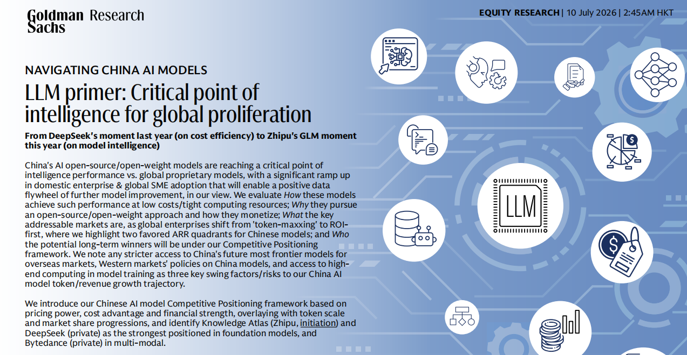
一句话核心
高盛发研报正式宣布：中国开源模型的智能水平已达到"全球扩散的临界点"——从去年 DeepSeek 的"成本效率时刻"，到今年智谱 GLM 的"模型智能时刻"。
背景与关键数据
图片是高盛 2026-07-10 的股票研报封面：《Navigating China AI Models — LLM primer: Critical point of intelligence for global proliferation》，副标题："From DeepSeek's moment last year (on cost efficiency) to Zhipu's GLM moment this year (on model intelligence)"。
核心论点（从封面正文提取）：
- 临界点已到：中国的开源/开放权重（open-source/open-weight）模型在智能表现上正在逼近全球闭源模型，同时在国内企业和全球中小企业（SME）的采用上大幅加速——这会形成一个正向的数据飞轮（data flywheel），推动模型进一步改进。
- 研报要回答四个问题：
- How：这些模型如何在低成本/算力受限的条件下达到这样的性能
- Why：为什么它们选择开源/开放权重路线，以及如何变现
- What：关键的可寻址市场（addressable market）在哪里——高盛指出全球企业正从 "token-maxxing"（追求最大 token 用量/最强模型）转向 "ROI-first"（投资回报优先），并点出两个他们看好的 ARR（年度经常性收入）象限
- Who：在他们的竞争定位框架下，谁是潜在的长期赢家
- 竞争定位框架：基于**定价能力（pricing power）、成本优势（cost advantage）、财务实力（financial strength）**三个维度，叠加 token 规模和市场份额的演进。
- 基础模型（foundation models）领域最强定位：Knowledge Atlas（智谱 Zhipu，首次覆盖 initiation） 和 DeepSeek（未上市 private）
- 多模态（multi-modal）领域：字节跳动 Bytedance（未上市）
- 三大风险/摇摆因素（swing factors）：
- 对中国未来最前沿模型的海外市场准入限制收紧
- 西方市场对中国模型的政策（监管、安全审查）
- 高端算力的获取（模型训练所需的先进芯片）
图片解读
这是研报封面，右侧是一圈围绕 "LLM" 芯片图标的图标环（代表 API、多模态、数据库、机器人、定价、图表等应用场景），视觉上表达"LLM 是中心，向外辐射到各个商业场景"。
读图要点：注意标题里的两个关键词——
- "Critical point"（临界点）：这是一个相变（phase transition）的隐喻。不是渐进改善，而是跨过某条线之后，性质就变了。高盛认为中国模型跨过的是"商业可用"这条线——不是"最强"，而是"够用且便宜"。
- "Global proliferation"（全球扩散）：注意用的是 proliferation（这个词常用于核武器扩散），暗示一种难以阻挡的、快速的、可能引发地缘担忧的传播。
另一个细节：高盛把智谱称为 "Knowledge Atlas"（智谱 AI 的英文名），并标注 initiation（首次覆盖）——券商首次覆盖一家公司，通常意味着它认为这家公司即将成为投资主线。
为什么重要 / 对市场和经济的含义
- 这条帖子和帖 2（花旗）、帖 7（五矿）构成今天的"AI 三连"。三家机构从三个角度说了同一件事：
机构 角度 结论 花旗（帖 2） 全球 AI 供需 供给跟不上需求，产业链持续受益；中国模型靠性价比可占企业级市场 高盛（帖 12） 中国模型能力 已跨过商业可用临界点，智谱和 DeepSeek 定位最强 五矿（帖 7） 中国出口路径 所以中国能靠低价 AI 服务出口，带动云→算力→电力→应用整条链 - 三条串起来就是一个完整的投资论文：能力够了（高盛）+ 需求旺盛且供给紧张（花旗）+ 价格是杀手锏（五矿）= 中国 AI 服务出口是真实的机会。
- "从 token-maxxing 到 ROI-first"是最重要的一句话。它的意思是：企业不再盲目追求"用最强的模型"，而是开始算账——"这个任务用便宜模型行不行？" 一旦企业的采购逻辑从"炫技"转向"算 ROI"，性价比就成了第一竞争维度。这对中国模型是结构性利好，对 OpenAI/Anthropic 的定价能力是结构性压力。（呼应帖 2 里花旗讲的"routing 技术"。）
- 但风险是政治的，不是技术的。高盛列出的三大风险里，两条是政治风险（海外准入限制、西方政策）。技术上跑通了，不代表商业上能卖出去。这和 TikTok、华为的剧本高度相似。
延伸知识
**"开源"为什么是中国 AI 的战略选择？**这是理解这一切的关键。
对一家追赶者来说，开源（准确说是"开放权重"，open-weight）有三重战略价值：
- 绕过分发壁垒：闭源模型要卖 API，需要在目标国建立商业关系、通过安全审查。开源模型只需要把权重放到 HuggingFace 上——任何人都可以下载、在自己的服务器上跑。这绕过了所有的准入限制（这也是为什么高盛把"准入限制"列为风险，但同时又用了 proliferation 这个词——开源让封锁变得困难）。
- 建立生态标准：一旦全球开发者习惯了在 Qwen/DeepSeek 上做微调，转换成本就产生了。安卓的剧本。
- 数据飞轮：更多人用 → 更多反馈和场景 → 模型更好 → 更多人用。高盛在封面里明确提到了 "positive data flywheel"。
代价：开源意味着放弃模型本身的变现。所以变现要靠别的——云服务（用我的模型，最好在我的云上跑）、企业定制、以及生态位卡位（先占住市场，未来再收租）。这就是高盛研报里 "Why they pursue an open-source/open-weight approach and how they monetize" 这个问题的重要性。
一个值得跟踪的悖论：如果中国模型开源了，那么"AI 服务出口"（帖 7 五矿的主线）怎么赚钱？答案是：卖算力，不卖模型。模型是免费的钩子，云 GPU 和推理服务才是收入。这也解释了为什么五矿把"云平台"列为主线一——因为在开源的世界里，收入在基础设施层，不在模型层。
帖 13 · 14:30 · #其他国家经济
帖子原文
摩根斯坦利：美国联邦财政赤字并没有市场想象中恶化，反而比 2023-2024 年有所改善，目前稳定在 GDP 的约 5.2%，这意味着美国国债收益率面临的上行压力可能低于市场此前担忧。我们认为赤字缩小对经济有利，私人部门能获得更多资金。
#其他国家经济#
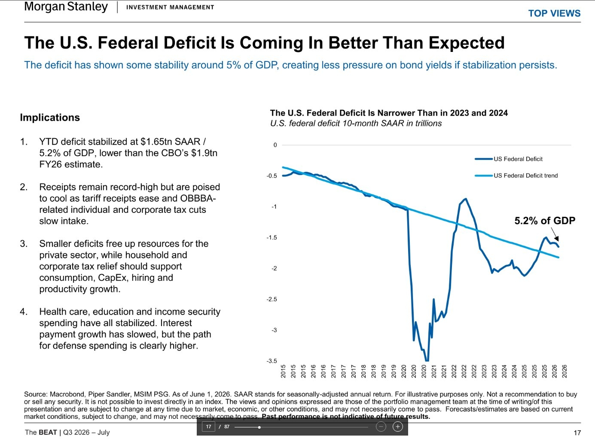
一句话核心
美国赤字没有失控，反而在收窄（GDP 的 5.2%，低于 CBO 预测的水平）——这对美债是一个被市场忽视的利好。
背景与关键数据
图片是摩根斯坦利投资管理（MSIM）的《The BEAT | Q3 2026 – July》第 17 页（共 87 页），标题："The U.S. Federal Deficit Is Coming In Better Than Expected"，副标题："赤字已在 GDP 的 5% 附近显示出一定稳定性，如果这种稳定持续，对债券收益率的压力会更小"。
四条 Implications（含义）：
- 年初至今赤字稳定在 1.65 万亿美元 SAAR / GDP 的 5.2%，低于 CBO（国会预算办公室）对 FY26 的 1.9 万亿美元预测。
- 财政收入仍处于历史高位，但即将降温——因为关税收入趋缓，以及 **OBBBA（One Big Beautiful Bill Act，特朗普的减税法案）**相关的个人和企业减税会拉低税收入账。
- 更小的赤字为私人部门腾出资源，同时家庭和企业的减税应该支撑消费、资本开支、招聘和生产率增长。
- 医保、教育和收入保障支出都已稳定。利息支付的增速已放缓，但国防支出的路径明显向上。
SAAR = Seasonally-Adjusted Annual Rate（经季节调整的年化率）——把最近一段时间的数据"年化"，方便和整年数据比较。
图片解读
右侧图表："美国联邦赤字比 2023 和 2024 年更窄"，纵轴是赤字（10 个月 SAAR，单位万亿美元），从 0 到 −3.5（越往下赤字越大），横轴 2015 → 2026。
- 深蓝线（US Federal Deficit，实际赤字）：
- 2015–2019：从约 −0.4 万亿缓慢恶化到 −1.0 万亿
- 2020：疫情断崖式暴跌到 −3.5 万亿（史上最大和平时期赤字）
- 2021：短暂回升后又跌到 −3.2 万亿附近（第二轮刺激）
- 2022：急剧改善到 −0.85 万亿（刺激退出 + 税收暴增）
- 2023–2024：再度恶化到 −1.9 到 −2.1 万亿（这就是市场担忧的来源）
- 2025–2026：回升到约 −1.5 万亿，图上明确标注 "5.2% of GDP"（黑色箭头指向 2026 年末的位置）
- 浅蓝线（US Federal Deficit trend，趋势线）：一条从 2015 年的 −0.4 平滑下行到 2026 年的 −1.8 万亿的直线。
- 读图要点（最关键）：深蓝线（实际）现在位于浅蓝线（趋势）的上方——也就是说，实际赤字比长期趋势所隐含的水平要好。这就是标题 "Coming In Better Than Expected" 的图形化证据。同时，2026 年的位置（−1.5 万亿）明显好于 2023–2024 年的低谷（−2.1 万亿）。
为什么重要 / 对市场和经济的含义
- 这条帖子直接对冲了 2025 年市场最大的恐慌之一："美国赤字失控 → 债券义警（bond vigilantes）出动 → 长端收益率飙升 → 股债双杀"。摩根斯坦利说：这个故事的前提（赤字恶化）本身就是错的。
- "挤出效应"的反面：赤字小 = 政府少发债 = 少抢走市场上的储蓄 = 私人部门有更多资金（企业能以更便宜的成本融资）。这是第 3 条 implication 的经济学含义。
- 但要和帖 9（高盛）对照着读——这两条帖子指向相反的方向：
对美债收益率的影响 帖 13（大摩）：赤字改善 压低长端收益率（供给减少） 帖 9（高盛）：市场定价加息 推高短端和整条曲线（政策利率上行） - 结论：美债曲线可能"熊平"（bear flattening）——短端因加息预期上行，长端因赤字改善而相对稳定，期限利差收窄。这是一个非常具体、可交易的判断。
- Jason 把这两条帖子放在同一天，很可能就是想让读者自己去撞这个矛盾。
- 两个隐含的风险点（大摩自己说的）：
- "财政收入即将降温"——关税收入趋缓 + OBBBA 减税生效。也就是说，5.2% 可能是一个"最好的时刻"，而不是新常态。
- "国防支出的路径明显向上"——结合帖 4（伊朗），如果真的开打，国防开支会立刻打破这个平衡。
- 对市场：如果赤字改善的故事成立，**长久期美债（TLT、30 年期）**是受益的（这也呼应帖 3 Rating Dog 建议"买长期限美国国债"）。但如果帖 9 的加息故事成立，长债就会被曲线整体上移拖累。这两个力的净效应，是当下最难判断、也最值得研究的问题。
延伸知识
为什么"赤字/GDP = 5%"是一个心理关口？
历史上，美国的和平时期正常赤字大约在 GDP 的 2–3%。5% 是一个通常只在衰退期才会出现的水平——但现在美国经济并没有衰退，失业率不高。"在充分就业下跑 5% 的赤字"是历史上极其罕见的。
判断赤字是否"可持续"的教科书公式是：
债务/GDP 稳定的条件：基本赤字率 ≤ (g − r) × 债务/GDP 比率
其中 g 是名义 GDP 增速，r 是债务的平均利率。美国现在的问题是 r 已经上来了（存量债务的平均利率从 2021 年的 1.6% 升到现在的 3.3%+，而且每年有大量低息老债到期、换成高息新债），而 g 没有同步上升。这就是帖 6 讲的 r < g 条件在美国这边正在失效。
**所以"赤字改善"这个好消息的分量，取决于它能不能持续。**大摩自己说"receipts are poised to cool"（收入即将降温）——这等于自己给自己的乐观打了个折。
一个跟踪工具：盯 美国财政部季度再融资公告（Quarterly Refunding Announcement, QRA）。它会公布下个季度各期限国债的发行规模。如果长债（10 年、30 年）的发行量下调，说明财政部确实认为赤字压力在缓解——这是比任何研报都硬的证据，因为这是发债方自己的行动。
今日全图索引
| 帖号 | 时间 | 主题 | 标签 | 图片文件名 |
|---|---|---|---|---|
| 1 | 12:30 | 梁建章：韩国发钱提振生育率有效，中国需每月 855 元发到 6 岁 | #人口 | post1_img1.png ~ post1_img7.png（7 张） |
| 2 | 12:40 | 花旗：AI 供给跟不上需求，资本开支是递延不是取消 | #经济数据 | post2_img1.png |
| 3 | 12:46 | Rating Dog 问答：地产阴跌、城投分层、黄金难上 5000 | #金融 | post3_img1.png, post3_img2.png |
| 4 | 12:51 | 特朗普警告伊朗"1000 枚导弹已锁定" | #其他国家经济 | post4_img1.png |
| 5 | 13:00 | 欧盟酝酿"团结工具"，对华逆差 3600 亿欧元 | #其他国家经济 | post5_img1.png, post5_img2.png |
| 6 | 13:20 | 人大论文：中国举债空间 —— Jason 批注"靠资本管制换来的" | #TAX | post6_img1.png ~ post6_img3.png（3 张） |
| 7 | 13:29 | 五矿：中国出口下一站是数字服务出口（AI/算力） | #经济数据 | post7_img1.png ~ post7_img6.png（6 张） |
| 8 | 13:31 | 医保局：在职退休比从 4.09 降至 2.60 | #TAX | post8_img1.png |
| 9 | 13:47 | 高盛：市场定价已从降息翻转为加息（期权隐含 >50%） | #金融 | post9_img1.png |
| 10 | 13:56 | 中国首次火箭海上驳船回收，落后 SpaceX 十年；"欧洲？" | #经济数据 | post10_img1.png |
| 11 | 14:11 | 万亿城市社零：21 城中 17 城创多年最低增速，5 城负增长 | #经济数据 | post11_img1.png |
| 12 | 14:14 | 高盛：中国大模型已跨过"商业可用"临界点 | #经济数据 | post12_img1.png |
| 13 | 14:30 | 大摩：美国赤字稳定在 GDP 5.2%，好于预期 | #其他国家经济 | post13_img1.png |
今日学习收获（给自己的三条笔记）
-
今天最值得反复读的是帖 6。它教了一个思维方式：当有人告诉你"我们还有空间"时，要问"这个空间是市场给的，还是自己造出来的"。人大论文说"利率低于增长率，所以能借"，Jason 反问"利率低是因为你不让钱出去"。任何依赖于"维持某个人为条件"的结论，都是脆弱的。
-
今天最大的矛盾是帖 9 vs 帖 13。高盛说市场在为加息定价（推高收益率），大摩说赤字在改善（压低收益率）。当两个高质量的信息源指向相反方向时，不要急着选边——去想"什么情况下两者可以同时成立"。答案很可能是：曲线熊平（短端上、长端稳）。这种"综合两个矛盾信息得出第三种结论"的能力，是宏观分析的核心功夫。
-
今天最完整的投资框架是帖 2 + 帖 7 + 帖 12 的"AI 三连"。但请注意一个"元问题"：Jason 在同一小时内连发三条同向的研报，这本身是不是一种"共识已经形成"的信号？当花旗、高盛、五矿都在说同一件事时，这个观点很可能已经反映在价格里了。真正的 alpha 往往藏在尚未形成共识的地方——比如帖 11 那张"17 个城市创最低增速"的表格，它讲的是一个没人愿意讲的坏消息。
本报告由自动化任务生成于 2026-07-11。内容为对帖子的解读与背景补充，不构成任何投资建议。所有第三方机构观点（花旗、高盛、摩根斯坦利、五矿、Rating Dog 等）均为其自身立场，未经独立验证。